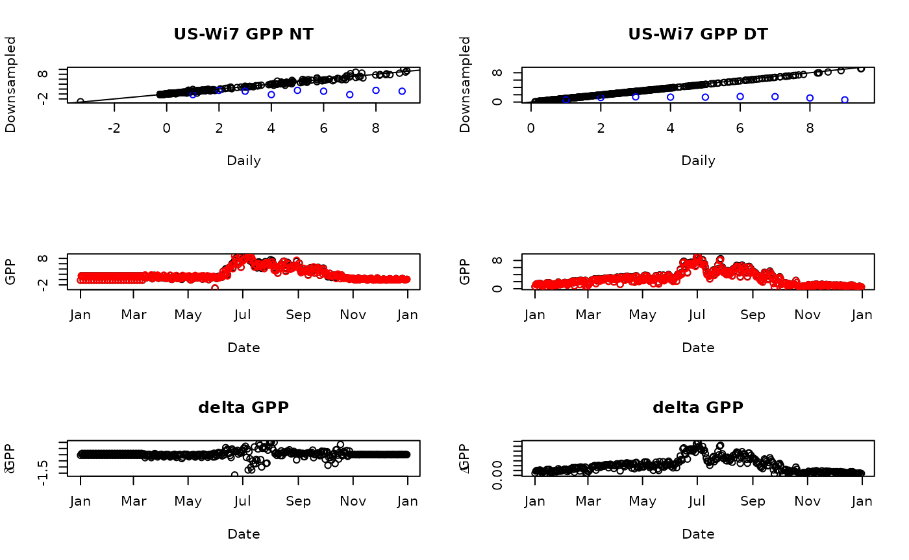

Downsampling uncertainty
Koen Hufkens
05_qaqc_downsampled_data.RmdThe standard FLUXNET daily data (DD) is a separate product of the half-hourly values, and not a mere downsampling of these data. However, since we do not reprocess all data we are forced to downsample data from the half-hourly data to a daily timestep for some modelling purposes. This downsampling comes with uncertainties, the below routine shows some of the (systematic) errors involved in this downsampling and should provide some guidance when using the daily data as provided by FluxDataKit.
You can use the below example code to check your own data selection for these consisten biases.
#---- use included sample data ----
site <- "US-Wi7"
site_files <- list.files(
system.file("extdata", package = "FluxDataKit"),
site,
full.names = TRUE
)
HH <- read.table(
site_files[grep("FULLSET_HH", site_files)],
header = TRUE,
sep = ","
) |>
mutate(
date_time = strptime(TIMESTAMP_START, "%Y%m%d%H%M"),
date = as.Date(date_time)
) |>
dplyr::select(
date,
date_time,
GPP_NT_VUT_REF,
GPP_DT_VUT_REF
) |>
group_by(date) |>
summarize(
GPP_NT_VUT_REF_HH = mean(GPP_NT_VUT_REF, na.rm = TRUE),
GPP_DT_VUT_REF_HH = mean(GPP_DT_VUT_REF, na.rm = TRUE)
)
DD <- read.table(
site_files[grep("FULLSET_DD", site_files)],
header = TRUE,
sep = ","
) |>
mutate(
date = strptime(TIMESTAMP, "%Y%m%d"),
) |>
dplyr::select(
date,
GPP_NT_VUT_REF,
GPP_DT_VUT_REF
)
DD <- left_join(DD, HH)## Joining, by = "date"
#---- plotting routine ----
par(mfrow=c(3,2))
plot(
DD$GPP_NT_VUT_REF,
DD$GPP_NT_VUT_REF_HH,
main = paste(site, "GPP NT"),
xlab = "Daily",
ylab = "Downsampled"
)
points(DD$GPP_NT_VUT_REF, DD$GPP_NT_VUT_REF_HH_M, col = "blue")
abline(0,1)
plot(
DD$GPP_DT_VUT_REF,
DD$GPP_DT_VUT_REF_HH,
main = paste(site, "GPP DT"),
xlab = "Daily",
ylab = "Downsampled"
)
points(DD$GPP_DT_VUT_REF, DD$GPP_DT_VUT_REF_HH_M, col = "blue")
abline(0,1)
plot(
DD$date,
DD$GPP_NT_VUT_REF,
xlab = "Date",
ylab = "GPP"
)
points(
DD$date,
DD$GPP_NT_VUT_REF_HH,
col = "red"
)
plot(
DD$date,
DD$GPP_DT_VUT_REF,
xlab = "Date",
ylab = "GPP"
)
points(
DD$date,
DD$GPP_DT_VUT_REF_HH,
col = "red"
)
plot(
DD$date,
DD$GPP_NT_VUT_REF - DD$GPP_NT_VUT_REF_HH,
main = "delta GPP",
xlab = "Date",
ylab = expression(delta * "GPP")
)
plot(
DD$date,
DD$GPP_DT_VUT_REF - DD$GPP_DT_VUT_REF_HH,
main = "delta GPP",
xlab = "Date",
ylab = expression(Delta * "GPP")
)